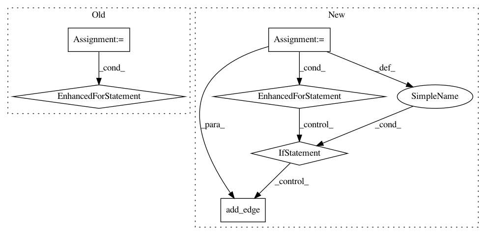

ff5bbede0431e5296811dc57432a33a9a68942d0,pysos/dag.py,SoS_DAG,build,#SoS_DAG#Any#,225
Before Change
//
// for some code using attributes
for node_i in self.nodes():
for node_j in self.nodes():
if node_i == node_j:
continue
if node_i.depends_on(node_j):
self.add_edge(node_j, node_i)
if node_j.depends_on(node_i):
self.add_edge(node_i, node_j)
def write_dot(self, filename):
try:
nx.drawing.nx_pydot.write_dot(self, filename)
except Exception as e:
After Change
indexed = [x for x in self.nodes() if x._node_index is not None]
indexed.sort(key = lambda x: x._node_index)
for idx, node in enumerate(indexed):
// 1. if a node changes context (using option alias), all later steps
// has to rely on it.
if node._change_context:
for later_node in indexed[idx + 1: ]:
self.add_edge(node, later_node)
// 2. if the input of a step is undetermined, it has to be executed
// after all its previous steps.
if isinstance(node._input_targets, Undetermined) and idx > 0:
self.add_edge(indexed[idx-1], node)
//
// 3. if the input of a step depends on the output of another step
for target, in_node in self._all_dependent_files.items():
for out_node in [y for (x,y) in self._all_output_files.items() if x == target]:
for i in in_node:
for j in out_node:
In pattern: SUPERPATTERN
Frequency: 3
Non-data size: 6
Instances
Project Name: vatlab/SoS
Commit Name: ff5bbede0431e5296811dc57432a33a9a68942d0
Time: 2016-09-22
Author: ben.bog@gmail.com
File Name: pysos/dag.py
Class Name: SoS_DAG
Method Name: build
Project Name: RaRe-Technologies/gensim
Commit Name: fabeffe39e70e1c371bcce158b3b8b0dd029e7a6
Time: 2019-01-17
Author: __Singleton__@hackerdom.ru
File Name: gensim/summarization/summarizer.py
Class Name:
Method Name: _set_graph_edge_weights
Project Name: dit/dit
Commit Name: 4e56081bc5cff4114c80cf755c696d807023afb9
Time: 2019-02-14
Author: ryangregoryjames@gmail.com
File Name: dit/pid/lattice.py
Class Name:
Method Name: pid_lattice